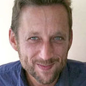

SmartTokens: Embedding Motion and Grip Sensing in Small Tangible Objects Extended Material
SmartTokens are small-sized tangible tokens that can sense multiple types of motion, multiple types of touch/grip, and send input events wirelessly as state-machine transitions. By providing an open platform for embedding basic sensing ca- pabilities within small form-factors, SmartTokens extend the design space of tangible user interfaces. We describe the de- sign and implementation of SmartTokens and illustrate how they can be used in practice by introducing a novel TUI design for event notification and personal task management.
Bibtex
@article {
*** ADD THE BIBTEX HERE ***
}
Slides
*** ADD YOUR SLIDESHARE EMBED CODE HERE ***
Video
*** ADD THE EMBED VIDEO HERE, MODIFY THE WIDTH TO GET 100% ***
Documentation
Hardware
Hardware Design
To download this figure in PDF version click on it.
How to build it
instruction to build
* Download the blueprint
* What to buy
* Step by step assembly
Software
List of Methods
*** ADD DOCUMENTATION HERE ***
List of Examples
*** ADD EXEMPLE HERE ***
Extended Materials
Add figure Name Here
To download this figure in PDF version click on it.
Add figure Name Here
To download this figure in PDF version click on it.
Add figure Name Here
To download this figure in PDF version click on it.
Add figure Name Here
To download this figure in PDF version click on it.
Authors
Mathieu Le Goc
Mathieu Le Goc is currently working on Dynamic Physical Visualisations, and more specifically developping new technologies to augment physicalizations. He is particularly interested in combinations of multiple objects to create physicalizations, like Bertin’s Matrices. Promoting direct manipulations and leveraging human hands capabilities motivate his work, to invent new “beyond desktop” tangible interfaces.

Pierre Dragicevic
Pierre Dragicevic is a Permanent Research Scientist at INRIA. He is interested in how manipulable representations of data can augment human cognition. He is also interested in tracing back the origins of data visualization by examining physical artefacts made throughout history, and in imagining how future humans will interact with data through programmable matter.
Samuel Huron
Samuel Huron is a post doctorate researcher in the Innovis Group (Interactions Lab, Department of Computer Science) at the University of Calgary. He graduated is Phd in 2014 from the university Paris-Saclay in
collaboration with INRIA. Before, he was the lead designer of the Institute
of research and Innovation of the Pompidou Center.
Jean Daniel Fekete
Jean-Daniel Fekete is Senior Research Scientist (DR1) at INRIA. He received his PhD in Computer Science in 1996 from Université Paris-Sud. From 1997 to 2001, he joined the Graphic Design group at the Ecole des Mines de Nantes that he led from 2000 to 2001. He was then invited to join the Human-Computer Interaction Laboratory at the University of Maryland in the USA for one year. He was recruited by INRIA in 2002 as a confirmed researcher and became Senior Research Scientist in 2006. He is the Scientific Leader of the INRIA Project Team AVIZ that he founded in 2007.